流程③ 期末与报表
记账期间开关 · 余额表 · 只能自动记帐 · 报表结构 · 资产负债表与损益表
期末篇回答「这个月还能不能记账、余额对不对、报表怎么出来」：先管住时间（记账期间变式 P999 + 前台期间开关），再核对余额（科目余额表 S_ALR_87012276），最后把科目范围映射成报表项目（任务 44）并运行资产负债表（任务 45）。教材 FI 的任务 15–19、42–45 是这一篇的现场。
教学场景
{kind=link}
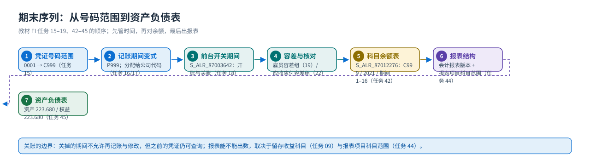
| 前置（关联配置） | 内容 | 教材任务 |
|---|---|---|
| 凭证号码范围 | 源公司 0001 → 目标公司 C999；没有它录不了凭证 | 15 |
| 记账期间变式 | P999 颐宁记账期间变式；分配给 C999 | 16、17 |
| 期间开关 | 前台「未清过帐期间和已结过帐期间」（S_ALR_87003642），画面用 +/A/D/K/S 与期间 1–12、13–16 | 18 |
| 容差组 | 雇员容差组（限制单张凭证/单笔未清项金额）、应收应付容差组 | 19、22 |
| 报表结构 | 颐宁公司财务报表版本（画面显示 P999）：资产 / 负债及所有者权益 / P+L 结果（净值结果：利润·亏损） | 44 |
| 环境值 | 会计年度 2021；任务 45 运行结果：资产 223.680、权益 223.680、本年利润 220.880 | （教材画面） |
① 管时间：记账期间变式定义变式，前台开关决定哪些期间能过账 —— 关账不是「禁止查」而是「禁止改与记」。多个公司代码可以共用一个变式统一控制。
② 对余额：跑科目余额表（任务 42），把总账余额、客户/供应商余额、MM 的 GR/IR 未清项三者对平；教程任务 41/40 的供应商余额、任务 35/36 的客户余额都要在这里核。
③ 出报表：财务报表版本（任务 44）把科目范围（如 A999 0010010101–0010019999）映射到报表项目；「P&L 结果」「净值结果：利润/亏损」是系统预定义项目，自动算轧差。配置完成后用任务 45 运行资产负债表/损益表。
手顺① 定义记账期间变式（任务 16）
定义记帐期间变式
财务会计(新)－财务会计全局设置(新)－分类账－会计年度和过账期间－过账期间-定义未清过账期间变式

画面 1教材《S4.docx》· FI 任务 16 定义记帐期间变式 · 原图 01_1_image149.png 
画面 2教材《S4.docx》· FI 任务 16 定义记帐期间变式 · 原图 01_2_image150.png 注意解释：这是用来对凭证的开关。已经关掉的会计期间就不允许对凭证进行更改。多个公司代码可以被统一控制开账和关帐。先给各个公司代码赋予记账期间变式参数。原书提示P999 颐宁记账期间变式
手顺② 把记账期间变式分配给公司代码（任务 17）
将记帐期间变式分配给公司代码
教材小节：财务会计(新)－财务会计全局设置(新)－分类账－会计年度和过账期间－过账期间-将变式分配给公司代码
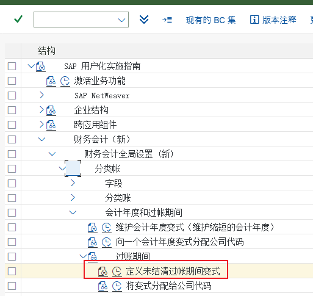
画面 3教材《S4.docx》· FI 任务 17 将记帐期间变式分配给公司代码 · 原图 01_1_image151.png 
画面 4教材《S4.docx》· FI 任务 17 将记帐期间变式分配给公司代码 · 原图 01_2_image152.png 原书提示P999
{kind=link}
手顺③ 前台开关过账期间（任务 18）
设置记帐期间(前台)
解释:完成开帐和关帐，通常作为月结的一个环节。
会计核算－财务会计－总帐－环境－当前设置－未清过帐期间和已结过帐期间
画面 5教材《S4.docx》· FI 任务 18 设置记帐期间(前台) · 原图 01_1_image153.png 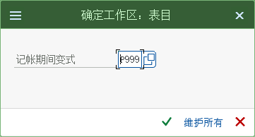
画面 6教材《S4.docx》· FI 任务 18 设置记帐期间(前台) · 原图 01_2_image154.png P999 +/A/D/K/S 1-12 期间 2006 年 13－16 期间，+/A/D/K/S 分别代表如下含义
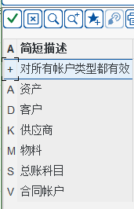
画面 7教材《S4.docx》· FI 任务 18 设置记帐期间(前台) · 原图 02_1_image155.png 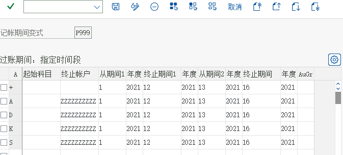
画面 8教材《S4.docx》· FI 任务 18 设置记帐期间(前台) · 原图 02_2_image156.png
{kind=link}
{kind=link}
{kind=link}
手顺④ 总账科目余额表（任务 42）
总帐科目余额汇总表
会计－财务会计－总帐－信息系统－总帐报表(新)－科目余额－常规－总帐科目余额－
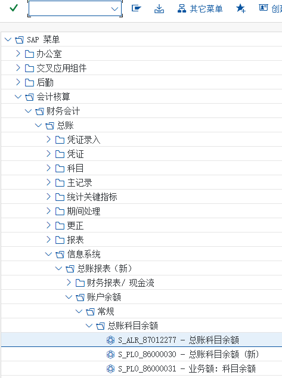
画面 9教材《S4.docx》· FI 任务 42 总帐科目余额汇总表 · 原图 01_1_image271.png 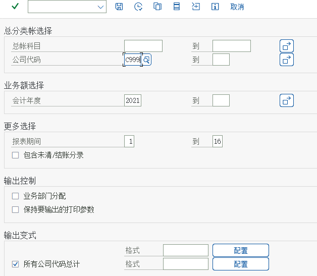
画面 10教材《S4.docx》· FI 任务 42 总帐科目余额汇总表 · 原图 01_2_image272.png 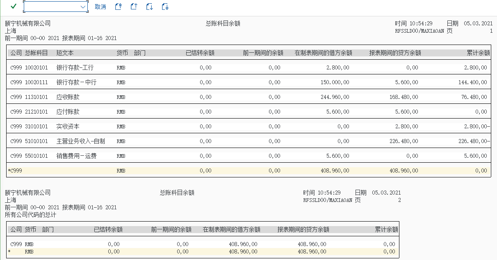
画面 11教材《S4.docx》· FI 任务 42 总帐科目余额汇总表 · 原图 02_1_image275.png
{kind=link}
{kind=link}
{kind=link}
手顺⑤ 把收入科目设为只能自动记帐（任务 43）
将收入科目设置为只能自动记帐
FS00
画面 12教材《S4.docx》· FI 任务 43 将收入科目设置为只能自动记帐 · 原图 01_1_image276.png 
画面 13教材《S4.docx》· FI 任务 43 将收入科目设置为只能自动记帐 · 原图 02_1_image277.png 
画面 14教材《S4.docx》· FI 任务 43 将收入科目设置为只能自动记帐 · 原图 02_2_image278.png
手顺⑥ 定义资产负债表和损益表结构（任务 44）
定义资产负债表和损益表结构
财务会计－总帐会计－业务往来－结算－编制凭证－定义会计报表版本

画面 15教材《S4.docx》· FI 任务 44 定义资产负债表和损益表结构 · 原图 01_1_image283.png 
画面 16教材《S4.docx》· FI 任务 44 定义资产负债表和损益表结构 · 原图 02_1_image284.png 新的分录
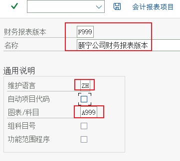
画面 17教材《S4.docx》· FI 任务 44 定义资产负债表和损益表结构 · 原图 03_1_image285.png 点击会计报表项目

画面 18教材《S4.docx》· FI 任务 44 定义资产负债表和损益表结构 · 原图 04_1_image286.png 
画面 19教材《S4.docx》· FI 任务 44 定义资产负债表和损益表结构 · 原图 04_2_image287.png 原书提示双击资产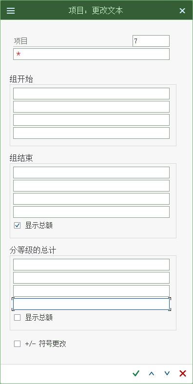
画面 20教材《S4.docx》· FI 任务 44 定义资产负债表和损益表结构 · 原图 05_1_image288.png
{kind=link}
{kind=link}
手顺⑦ 运行资产负债表（任务 45）
运行资产负债表

画面 21教材《S4.docx》· FI 任务 45 运行资产负债表 · 原图 01_1_image311.png 
画面 22教材《S4.docx》· FI 任务 45 运行资产负债表 · 原图 02_1_image312.png 10 代表本位币
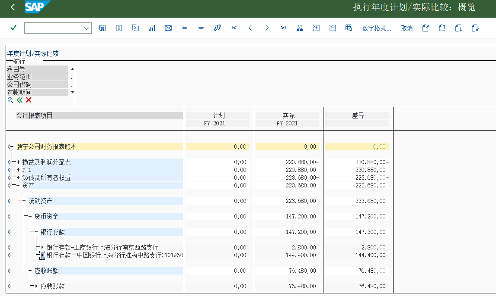
画面 23教材《S4.docx》· FI 任务 45 运行资产负债表 · 原图 03_1_image313.png
{kind=link}
223.680,00- 后面那个减号 = 贷方余额（负债/权益侧）；② 资产负债表能出数的前提是：留存收益科目（任务 09，410901）与报表项目科目范围（任务 44）都配好；③ 资产 ≠ 负债 + 所有者权益 时，先查有没有未过账的预制凭证，再查报表项目范围漏了哪个科目。期末清单（照着打勾）
- ① 凭证是否都过账（没有遗留的预制凭证）—— 用
FBV0/凭证清单检查（教材未演示）。 - ② 科目余额表（任务 42）与客户/供应商余额（任务 36/41）是否对得上。
- ③ GR/IR（材料采购 12010101）是否配平 —— MM 侧的收货与发票校验要配对（见 MM 站）。
- ④ 开票/收入科目是否都由系统自动过账（任务 43 的「只能自动记帐」）。
- ⑤ 关账：任务 18 前台把已结账期间关掉，防止事后修改。
- ⑥ 出报表：任务 44 的报表结构 + 任务 45 运行资产负债表/损益表。
- ⑦ （教材未演示、项目必用）自动清账
F.13、自动付款F110、凭证归档与报表导出。
常见错误与排查
| 症状 | 原因 | 处理 |
|---|---|---|
| 前台期间设置里看不到 P999 变式 | 变式没分配给公司代码 | 先做任务 17（过账期间-将变式分配给公司代码） |
| 期末过账报「期间 xx 已关闭」 | 任务 18 的期间开关把该期间关了 | 按需打开该期间；确认不是记错日期导致落到已关期间 |
| 科目余额表里某个科目为 0/查不到 | 该科目期间内没有凭证；或被限定在科目区间外 | 放宽科目区间与期间（1–16），勾「包含未清/结账分录」 |
| 资产负债表出不来数（全 0） | 报表结构（任务 44）还没建项目，或科目范围没填 | 按任务 44 建报表项目并绑科目范围（如 A999 0010010101–0010019999） |
| 资产 ≠ 负债 + 所有者权益 | 留存收益科目（410901）没配；或「净值结果：利润/亏损」没调整到 3142 下 | 回到任务 09 与任务 44 检查 |
| 收入科目手工记不进去 | 任务 43 设置了「只能自动记帐」 | 预期行为；改为让 SD 开票自动生成收入凭证 |
| 报表版本选错 | 系统里存在多个报表版本（教材画面里显示的是「颐宁公司财务报表版本」） | 运行时按版本名/编号核对（教材画面里 10 = 本位币，别把货币类型当版本号） |
上下游关系：期间与报表结构来自后台配置（配置篇 D 组任务 15–19 与 J 组任务 42–45），余额对不对则取决于总账（总账篇）与应收应付（应收应付篇）的日常动作。